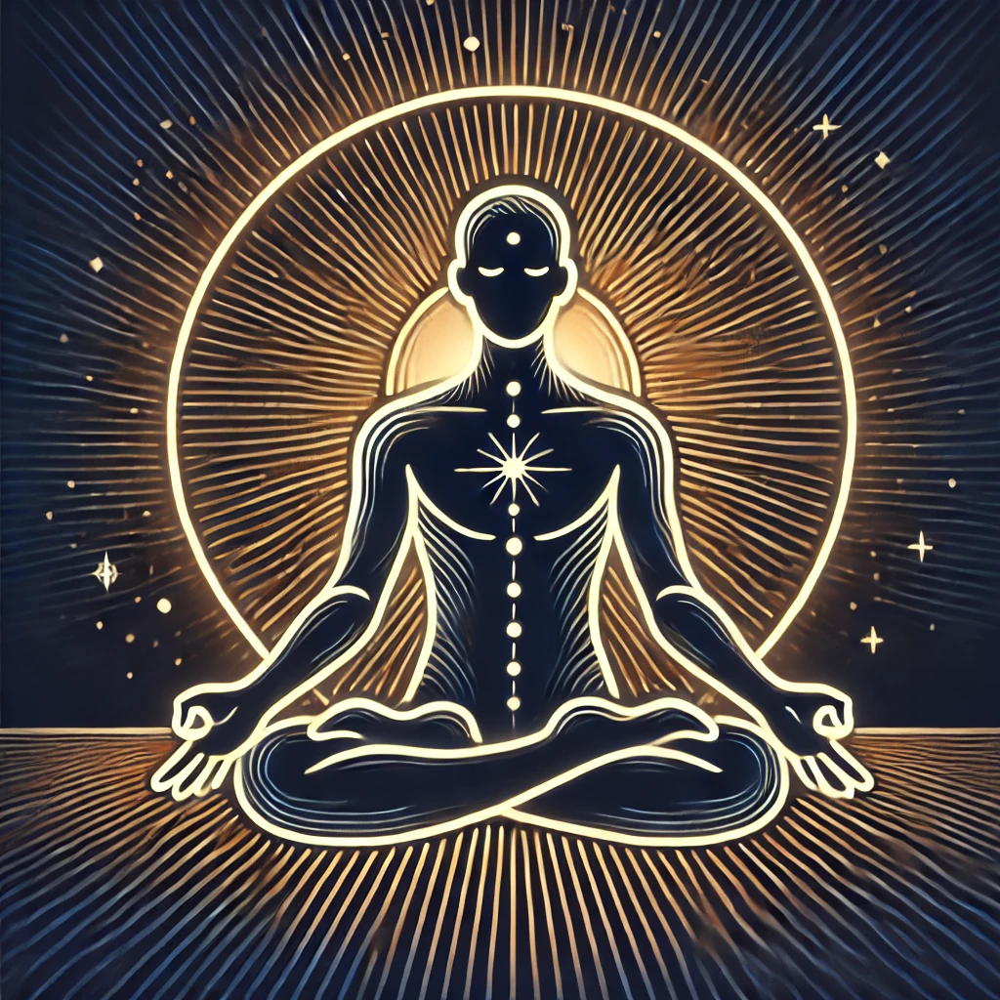

The Connection Between Sun Gazing and Meditation Practices
Sun gazing, the practice of looking directly at the sun during specific times of the day, and meditation, a practice of focused attention and mindfulness, both have ancient roots and are widely regarded for their physical, mental, and spiritual benefits. When combined, these practices can create a powerful synergy that enhances overall well-being and deepens spiritual experiences. This comprehensive article explores the connection between sun gazing and meditation practices, examining their historical backgrounds, benefits, and practical guidelines for integrating them into your daily routine.
## Historical Context of Sun Gazing and Meditation
### Ancient Roots of Sun Gazing
Sun gazing has been practiced by various cultures throughout history, each viewing the sun as a source of life, energy, and divine connection.
#### Ancient Egypt
1. **Ra, the Sun God**: The Egyptians worshipped Ra, the sun god, and incorporated sun gazing into their spiritual and healing practices.
2. **Sun Temples**: Temples dedicated to Ra were constructed to harness the sun's energy, facilitating rituals that included sun gazing.
#### Ancient Greece
1. **Helios, the Sun Deity**: In Greek mythology, Helios was the personification of the sun, driving his chariot across the sky each day.
2. **Heliotherapy**: Greek physicians, including Hippocrates, advocated for the therapeutic use of sunlight to treat various ailments and boost vitality.
#### Mesoamerican Cultures
1. **Aztecs and Mayans**: These civilizations integrated sun gazing into their religious practices, viewing the sun as a vital force for energy and life.
2. **Sun Worship**: Sun worship was central to their rituals, reflecting the belief in the sun's ability to energize and sustain.
### Ancient Roots of Meditation
Meditation has been practiced for thousands of years in various cultures, primarily within spiritual and religious contexts.
#### Hinduism and Yoga
1. **Vedic Traditions**: Meditation practices are rooted in the ancient Vedic traditions of India, where they were used to achieve spiritual enlightenment and inner peace.
2. **Yoga and Meditation**: Yoga, which includes meditation as a fundamental component, was developed to prepare the body and mind for spiritual growth and connection with the divine.
#### Buddhism
1. **Mindfulness and Concentration**: Meditation is a central practice in Buddhism, focusing on mindfulness (Vipassana) and concentration (Samatha) to achieve enlightenment.
2. **Zen Meditation**: In Zen Buddhism, meditation (Zazen) is practiced to cultivate awareness, insight, and direct experience of reality.
#### Taoism
1. **Inner Alchemy**: Taoist meditation practices aim to harmonize the body, mind, and spirit, often incorporating visualization, breath control, and energy cultivation.
## The Synergy Between Sun Gazing and Meditation
### Complementary Benefits
Sun gazing and meditation share several complementary benefits that can enhance overall well-being when practiced together.
#### Physical Benefits
1. **Vitamin D Synthesis**: Sun gazing boosts vitamin D production, essential for bone health, immune function, and overall vitality.
2. **Improved Circulation**: Both practices can improve blood circulation, supporting cardiovascular health and physical well-being.
#### Mental Benefits
1. **Enhanced Focus and Concentration**: Meditation improves focus and concentration, while sun gazing can enhance mental clarity and reduce stress.
2. **Mood Enhancement**: Sunlight exposure increases serotonin production, improving mood and reducing symptoms of depression and anxiety. Meditation promotes relaxation and emotional balance.
#### Spiritual Benefits
1. **Deepened Mindfulness**: Meditation cultivates mindfulness and present-moment awareness, which can be enhanced by the calming and centering effects of sun gazing.
2. **Spiritual Awakening**: Both practices can foster spiritual growth, self-realization, and a deeper connection with the universe.
### Integrating Sun Gazing and Meditation
Combining sun gazing with meditation can create a powerful practice that maximizes the benefits of both. Here are practical guidelines for integrating these practices.
#### Morning Routine
1. **Wake Up Early**: Set your alarm to wake up early enough to catch the first hour of sunrise.
2. **Hydrate**: Drink a glass of water to hydrate your body before starting your session.
3. **Find Your Spot**: Head to your chosen location with a clear view of the sunrise.
4. **Begin with Sun Gazing**: Start by gazing at the sun for 10-15 seconds, gradually increasing the duration by 10 seconds each day.
5. **Transition to Meditation**: After your sun gazing session, sit in a comfortable position and transition to meditation. Focus on your breath, a mantra, or simply observe your thoughts without attachment.
6. **Reflect and Set Intentions**: Use this time to reflect on your day ahead and set positive intentions.
#### Evening Routine
1. **Wind Down Your Day**: Schedule your sun gazing session as part of your evening wind-down routine.
2. **Hydrate**: Drink a glass of water to keep your body hydrated.
3. **Find Your Spot**: Head to your chosen location with a clear view of the sunset.
4. **Begin with Sun Gazing**: Start by gazing at the sun for 10-15 seconds, gradually increasing the duration by 10 seconds each day.
5. **Transition to Meditation**: After your sun gazing session, sit in a comfortable position and transition to meditation. Focus on your breath, a mantra, or simply observe your thoughts without attachment.
6. **Reflect and Unwind**: Use this time to reflect on your day, express gratitude, and prepare for a restful night's sleep.
## Safety Precautions
### Eye Safety
1. **Gaze During Safe Hours**: Practice sun gazing during the first hour after sunrise and the last hour before sunset to minimize the risk of eye damage.
2. **Start Gradually**: Begin with short sessions and gradually increase the duration. Monitor any signs of discomfort and adjust accordingly.
3. **Use Sunglasses After Sessions**: Protect your eyes from sudden exposure to bright light after your sun gazing session.
### Skin Safety
1. **Limit Exposure**: Keep your sun gazing sessions brief to reduce the risk of sunburn and skin damage.
2. **Hydrate**: Drink plenty of water before and after your sessions to stay hydrated.
3. **Use Sunscreen**: Apply sunscreen to exposed skin if you plan to spend additional time in the sun.
## Enhancing Your Sun Gazing and Meditation Practice
### Join a Community
1. **Online Forums**: Participate in online forums and social media groups dedicated to sun gazing and meditation. These platforms offer resources, tips, and encouragement.
2. **Local Groups**: Look for local groups or wellness communities that practice together. Group sessions can enhance the experience and foster a sense of connection.
3. **Workshops and Retreats**: Attend workshops or retreats focused on sun gazing and meditation. These events provide in-depth guidance and the opportunity to learn from experienced practitioners.
### Personalize Your Practice
1. **Adjust Timing**: Experiment with different times within the safe hours to find what works best for you.
2. **Modify Duration**: Tailor the duration of your sessions to suit your comfort level and schedule.
3. **Incorporate Breaks**: Take short breaks during your sessions to rest your eyes and mind.
### Complementary Practices
1. **Yoga**: Incorporate yoga into your routine to enhance physical and mental well-being. Practice poses like Surya Namaskar (Sun Salutation) during your sessions.
2. **Journaling**: Keep a journal to record your experiences, reflections, and any changes in your physical, mental, or spiritual well-being.
3. **Healthy Lifestyle**: Maintain a balanced diet, regular exercise, and adequate sleep to support your overall health and complement the benefits of sun gazing and meditation.
## Monitoring Progress and Benefits
### Keep a Sun Gazing and Meditation Journal
1. **Daily Entries**: Record your experiences, including the duration of your sessions, reflections, and any physical, mental, or spiritual changes you notice.
2. **Track Progress**: Monitor your progress over time, noting improvements in your overall well-being and any specific benefits you experience.
3. **Set Goals**: Set achievable goals for your practice and track your progress toward these goals.
### Reflect on Changes
1. **Physical Health**: Note any changes in your physical health, such as increased energy levels, improved vision, or enhanced vitality.
2. **Mental Health**: Reflect on changes in your mental health, including mood, stress levels, and mental clarity.
3. **Spiritual Growth**: Consider any spiritual growth or insights you gain from your practice.
### Seek Feedback
1. **Consult a Professional**: Regularly consult with a healthcare professional to ensure you are practicing safely and effectively.
2. **Share Experiences**: Share your experiences with other practitioners and seek feedback and support from the community.
## Conclusion
The connection between sun gazing and meditation practices offers a unique opportunity to enhance your overall well-being. By integrating these practices into your daily routine, you can harness the power of the sun and the calming effects of meditation to boost your physical, mental, and spiritual health. Remember to follow safety guidelines, monitor your progress, and seek support from the community. With dedication and consistency, sun gazing and meditation can become valuable and enriching parts of your holistic wellness journey.
---
*Disclaimer: The information provided in this article is for educational purposes only. Sun gazing and meditation can pose risks if not done correctly. Always consult with a healthcare professional before starting any new health practice.*